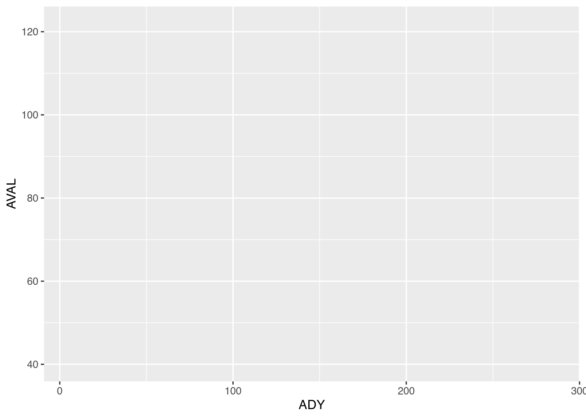
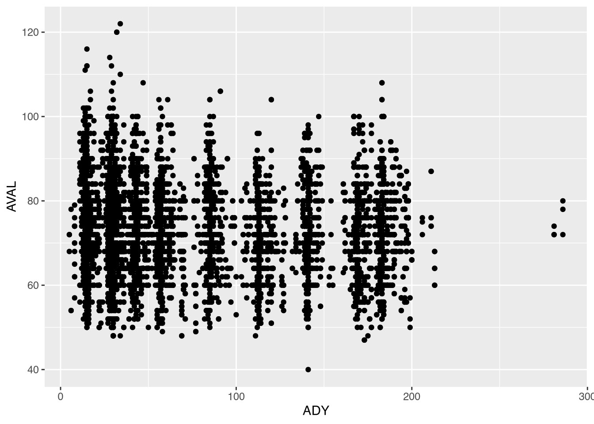
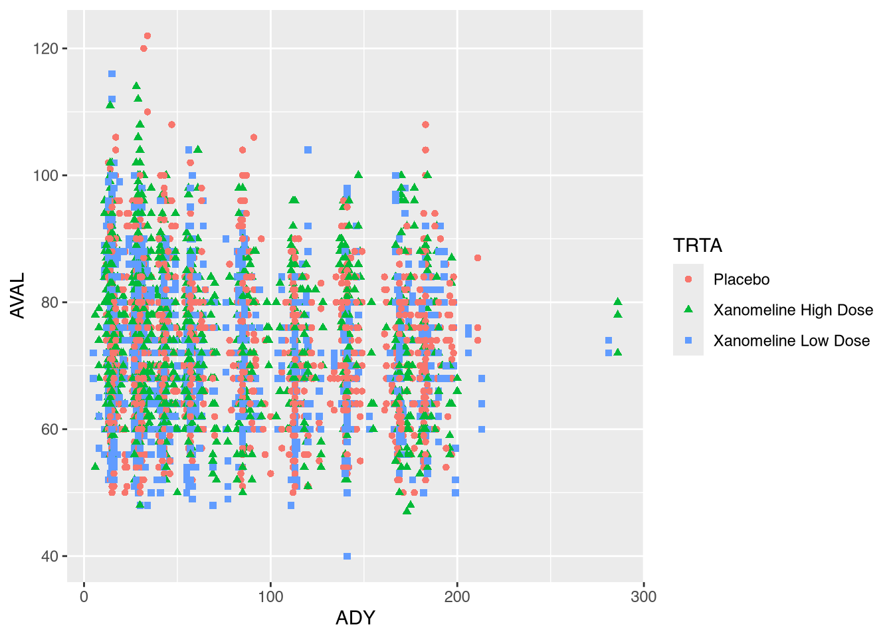
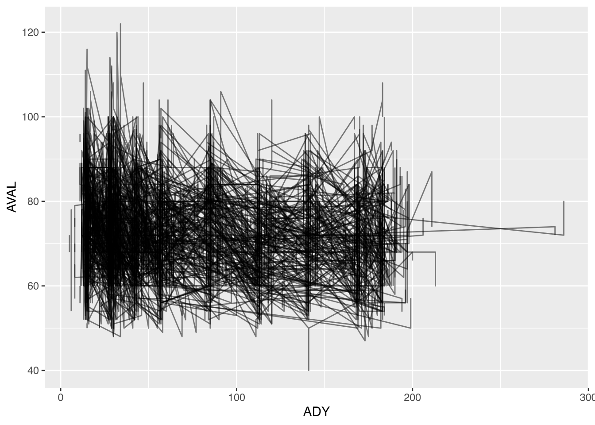
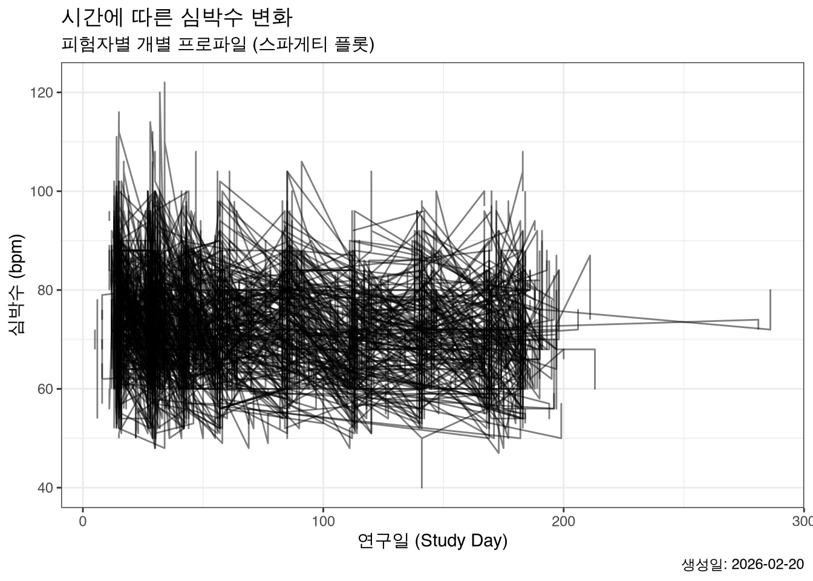
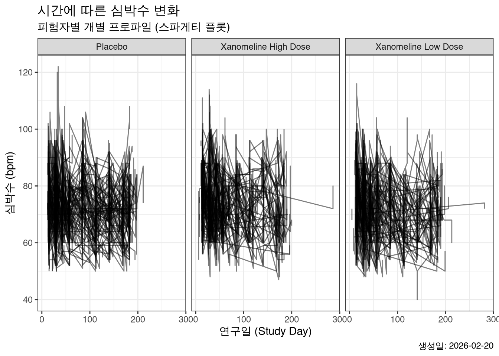
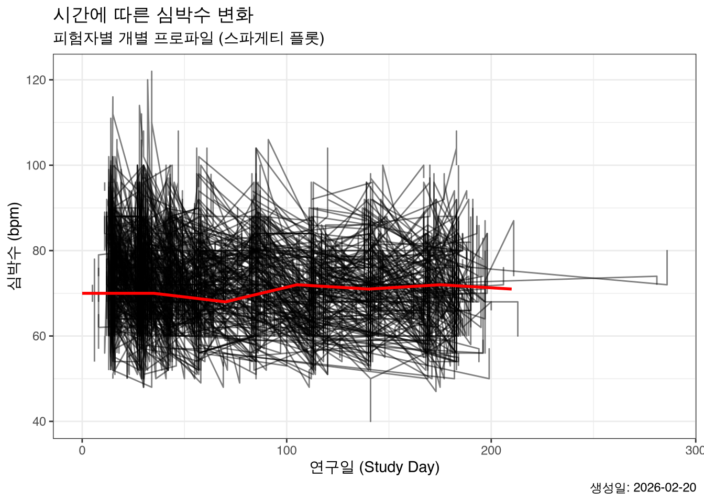
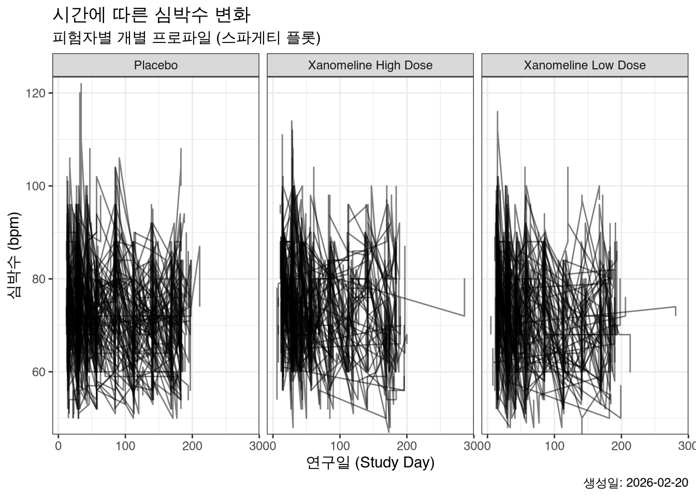

ADVS <- import(file = "./data/advs.xpt")
PR <- ADVS %>%
filter(PARAMN == 3) %>% # 심박수 필터링
filter(VISITNUM > 3) %>% # 치료 기간 이후 데이터
mutate(StudyWeek = floor(ADY/7))5 {ggplot2}를 이용한 시각화 기초
이 미니 프로젝트에서는 R의 대표적인 시각화 패키지인 {ggplot2}를 사용하여 데이터를 시각화하는 방법을 배웁니다. {ggplot2}는 레이어(Layer) 구조를 기반으로 하며, 수많은 확장 패키지를 통해 기능을 무한히 확장할 수 있다는 장점이 있습니다.
5.1 목표
ggplot()함수와aes()(Aesthetic mapping) 이해geom_point(),geom_line()을 이용한 산점도 및 선 그래프 생성labs()를 이용한 제목 및 축 레이블 설정facet_wrap()을 이용한 그룹별 분할 그래프 생성
5.2 데이터 소스
익명화된 CDISC 데이터셋: https://github.com/phuse-org/phuse-scripts/tree/master/data/adam/cdisc
5.3 1. 데이터셋 준비
CDISC의 분석 활력 징후(ADVS) 데이터를 사용합니다. 여기서는 심박수(Pulse Rate) 측정치에 집중하며, 치료 시작 후 경과 주차를 나타내는 StudyWeek 변수를 새로 계산합니다.
5.4 2. ggplot 기본 구조
ggplot() 함수는 그래프를 그릴 빈 “캔버스”를 생성합니다. data 인수는 사용할 데이터셋을, mapping 인수는 데이터의 열을 그래프의 시각적 요소(축, 색상 등)에 어떻게 연결할지(aes() 함수 사용) 정의합니다.
# x축을 연구일(ADY), y축을 측정치(AVAL)로 설정
ggplot(data = PR, mapping = aes(x = ADY, y = AVAL)) 
팁: 학습 초기에는 mapping = aes(...)와 같이 인수를 명시적으로 작성하는 것을 권장합니다.
5.5 3. 기하학적 객체(Geom) 추가
산점도를 그리려면 위 문구에 + geom_point()를 추가합니다. + 연산자는 레이어를 쌓는 역할을 하며, 반드시 줄 끝에 위치해야 합니다.
ggplot(data = PR, mapping = aes(x = ADY, y = AVAL)) +
geom_point()Warning: Removed 3 rows containing missing values or values outside the scale range
(`geom_point()`).
5.6 4. 데이터 그룹화
치료군(TRTA)별로 데이터를 구분해 보겠습니다. aes() 내부에 group, colour, shape 등을 지정할 수 있습니다.
ggplot(data = PR, mapping = aes(x = ADY, y = AVAL,
colour = TRTA, shape = TRTA)) +
geom_point()Warning: Removed 3 rows containing missing values or values outside the scale range
(`geom_point()`).
5.7 5. 개별 피험자별 선 연결 (스파게티 플롯)
동일한 피험자의 측정치를 선으로 연결하여 변화 추이를 확인하는 “스파게티 플롯 (Spaghetti Plot)”을 그려봅니다. 피험자 식별자인 USUBJID를 group에 매핑합니다.
plot1 <- PR %>%
ggplot(mapping = aes(x = ADY, y = AVAL, group = USUBJID)) +
geom_line(alpha = 0.5) # 선의 투명도 조절
plot1Warning: Removed 1 row containing missing values or values outside the scale range
(`geom_line()`).
5.8 6. 레이블 및 테마 설정
labs() 함수로 제목과 축 레이블을 한글로 수정하고, theme_bw()를 적용하여 깔끔한 테마로 변경합니다.
plot2 <- plot1 +
labs(title = "시간에 따른 심박수 변화",
subtitle = "피험자별 개별 프로파일 (스파게티 플롯)",
x = "연구일 (Study Day)",
y = "심박수 (bpm)",
caption = paste("생성일:", Sys.Date()))
plot3 <- plot2 + theme_bw()
plot3Warning: Removed 1 row containing missing values or values outside the scale range
(`geom_line()`).
5.9 7. 패싯(Facet)을 이용한 그룹별 분할
치료군(TRTA)별로 그래프를 나누어 보고 싶을 때 facet_wrap()을 사용합니다.
plot4 <- plot3 +
facet_wrap(~ TRTA)
plot4Warning: Removed 1 row containing missing values or values outside the scale range
(`geom_line()`).
5.10 8. 결과 저장
ggsave()를 사용하여 결과물을 이미지 파일로 저장할 수 있습니다.
# ggsave("heart_rate_plot.png", plot = plot4, width = 8, height = 6, units = "in")5.11 9. 요약 통계(중앙값) 추가
개별 데이터 위에 전체 중앙값의 흐름을 겹쳐 그릴 수 있습니다. stat_summary()를 사용합니다.
# 주차별 데이터를 위해 필터링된 데이터셋 생성
dataWeeks <- PR %>%
filter(StudyWeek %in% c(0, 5, 10, 15, 20, 25, 30)) %>%
mutate(ADY = StudyWeek * 7)
plot3 +
stat_summary(data = dataWeeks,
mapping = aes(x = ADY, group = NULL),
fun = median,
geom = "line",
colour = "red",
linewidth = 1)Warning: Removed 1 row containing non-finite outside the scale range
(`stat_summary()`).Warning: Removed 1 row containing missing values or values outside the scale range
(`geom_line()`).
5.12 10. 축 범위 조정 (Zooming)
데이터를 삭제하지 않고 특정 영역을 확대해서 보려면 coord_cartesian()을 사용합니다.
plot4 +
coord_cartesian(ylim = c(50, 120))Warning: Removed 1 row containing missing values or values outside the scale range
(`geom_line()`).
5.13 챌린지
수축기 혈압(Systolic BP), 이완기 혈압(Diastolic BP), 체온(Temperature) 등에 대해서도 동일한 과정을 수행해 보세요. 데이터의 특성에 맞게 축 레이블을 수정하는 것을 잊지 마세요.